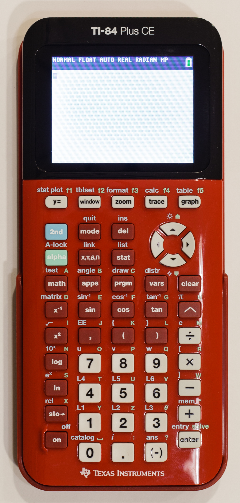

MATHAPP emulator
This is the calculator-shaped preview. The CEmu suite displays its
latest screen at ../tests/emulator-artifacts/after-transfer.bmp.
Run the suite with a ROM or saved state, then refresh.


CEmu LCD screenshot will appear here after a ROM-backed test.